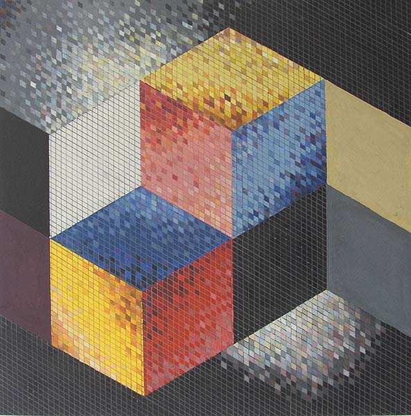
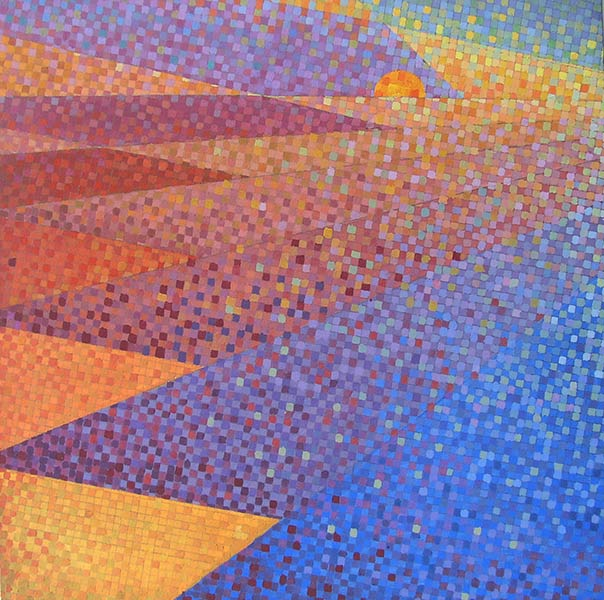
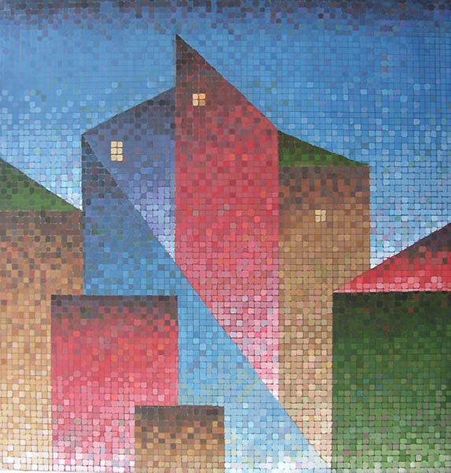
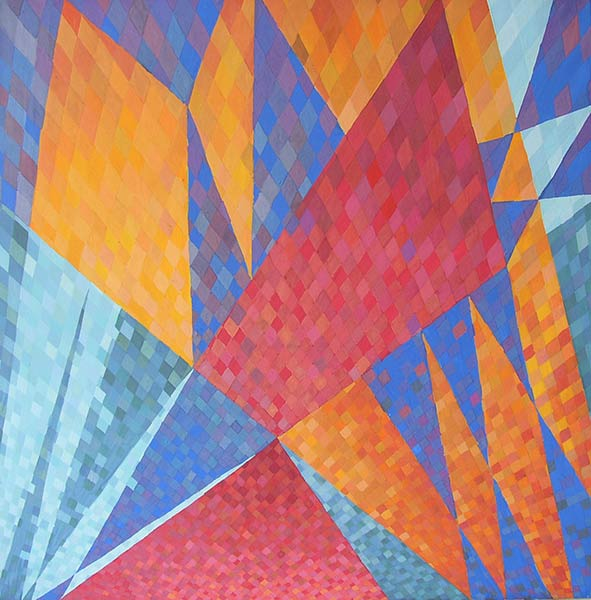
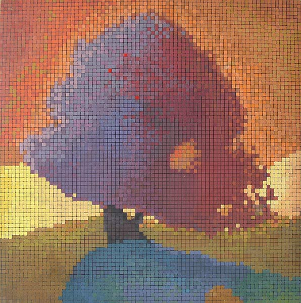
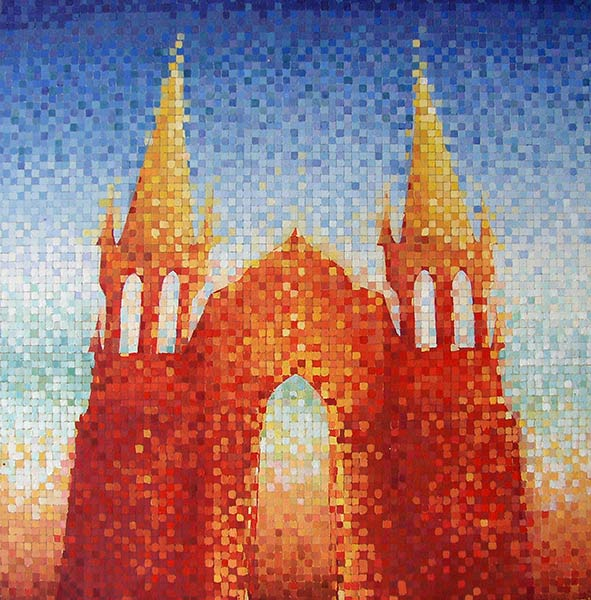

Задание
Основы колористики.
Авторы работ: Лукинский И., Мельникова Т., Краевский И., Листюхин А., Шастак Настя.
Просмотр 1 февраля 2006

Объемы и плоскости

Динамика пространства

Городской пейзаж

Пересечения плоскостей

Дерево

Портал